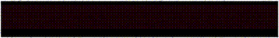

Nephila
Simple Static Website Generator
I needed a website, a place to write about my projects and also to tell about my ideas in a blog-like environment. I knew there were multiple options to do that; some people use Jekyll, Read the Docs, even paper websites and there are also some lunatic people that just write in plain text and format using ascii art...
So, I started implementing my own static website generator. The idea was to create a templates folder where I can put some html and css of the general webpage structure and then write my projects and blog posts in their own folders. After building the website with the ./nephila build command, it creates the html files inside the docs folder, so you can easily put this folder into a github repo and host your website with Github Pages.
There's more to it I promise, I've created a config.ini file, which takes basic information like site title, site description, social media links and add them to according places. Besides, it can create some cool javascript sliding ascii art for your headings.

I write my projects and blog posts with markdown and then just use jinja and markdown modules to apply the text to a project/blog template and create the html file for it. Since I'm open-sourcing the code, others can replace the base html and css for the website overall and create different themes that are easy to use by just replacing the templates folder.
If you want to see any examples, just look around this website !
As always, you can find the source code down below.
Feel free to email me your comments!